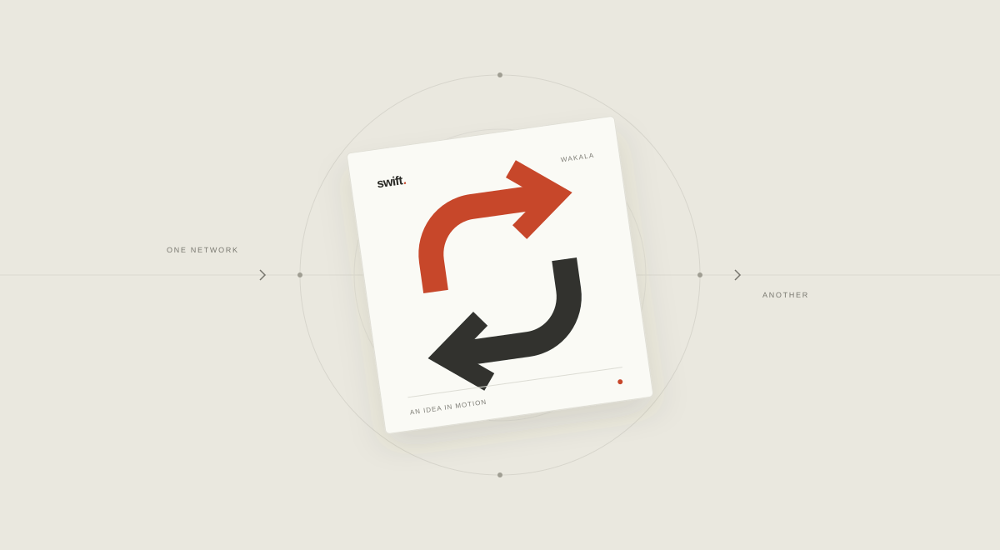

Float, with a little more flow.Try the previewSwift Wakala.
React Native / TypeScript / Express / PostgreSQL
An idea born from a familiar problem: having float on one network and needing it on another. I’m building the requests, accounts, and approval flows around it.
Where it stands
The interface is a working prototype. Direct integration with agent systems is still an open question; the preview does not move real money.